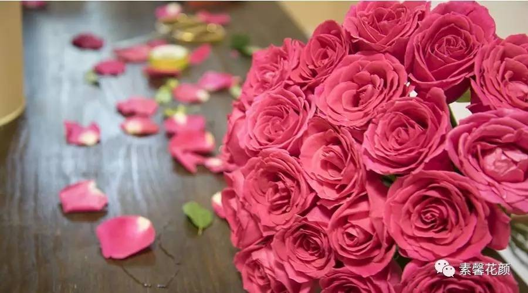

那些配材花的点睛之笔
2017/8/27 18:30:00
王亚楠
40

在花艺作品的制作中一般都有三个板块融合穿插而成，她们分工明确而又密切合作，她们承认重点花材不可替代的核心地位，也尊重所谓配材花的衬托力量以及末级中心勾勒轮廓的枝叶。
在花艺作品的制作中一般都有三个板块融合穿插而成，她们分工明确而又密切合作，她们承认重点花材不可替代的核心地位，也尊重所谓配材花的衬托力量以及末级中心勾勒轮廓的枝叶。
在花艺作品的制作中一般都有三个板块融合穿插而成，她们分工明确而又密切合作，她们承认重点花材不可替代的核心地位，也尊重所谓配材花的衬托力量以及末级中心勾勒轮廓的枝叶。
在花艺作品的制作中一般都有三个板块融合穿插而成，她们分工明确而又密切合作，她们承认重点花材不可替代的核心地位，也尊重所谓配材花的衬托力量以及末级中心勾勒轮廓的枝叶。